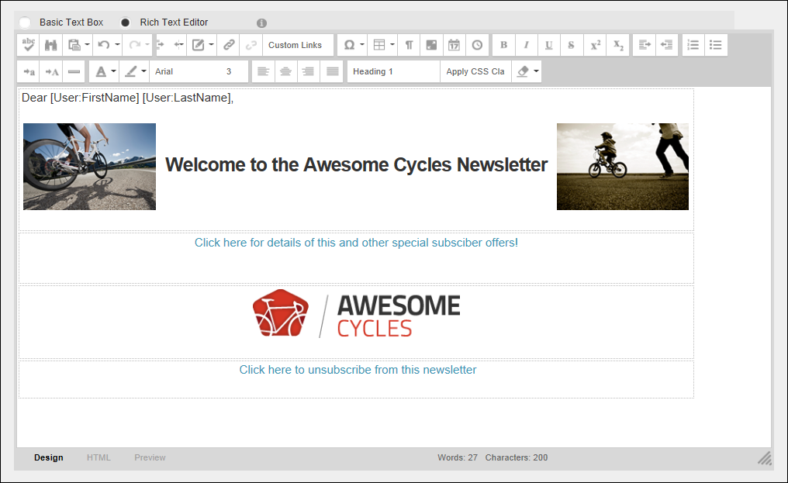
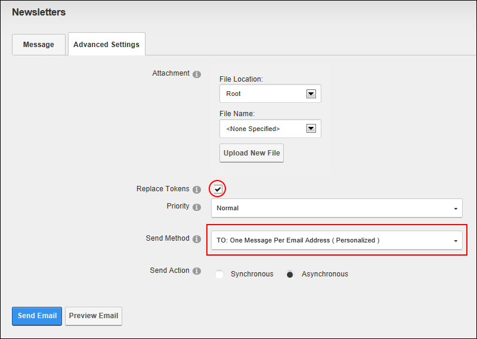
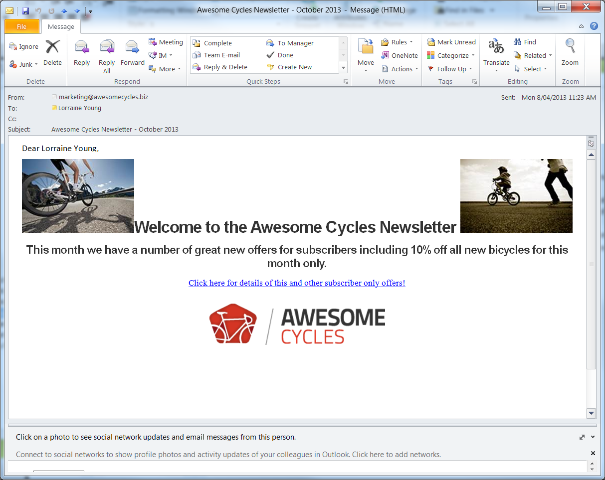

Sending a Newsletter with Tokens
How to send a newsletter that includes replacement tokens using the Newsletters module. Using replacement tokens in your messages enables you include relevant and up-to-date information in your messages. For example, you can display the recipient's name in the salutation, or include information such as the site name or description in the body of your message. By using replacement tokens instead of static content, you can be sure that details which may change, such as the site administrators email address are always current. See "List of Replacement Tokens" for a list of tokens that can be used.
- Navigate to Admin > Advanced Settings >
 Newsletters - OR - Go to a Newsletters module.
Newsletters - OR - Go to a Newsletters module.
- Select the Message tab and complete the required settings. See "Sending a Basic Newsletter"
- At Editor, select Basic Text Box to send a pSlain text email - OR - Select Rich Text Editor to send an HTML email with formatting and images.
- Enter the body of the newsletter into the Editor including replacement tokens. E.g. [User:FirstName] [User:LastName]. See "List of Replacement Tokens"

- Select the Advanced Settings tab and then set these required settings:
- At Replace Tokens?, .
- At Send Method, select To: One Message Per Email Address ( Personalized ).

- Set any of the optional Advanced Settings, See "Sending a Basic Newsletter" for more details.
- Click the Send Email button. This displays either a Successful or Not Successful message. For Synchronous send action, the message doesn't display until after all emails have been sent. For Asynchronous send action, the message displays once the send action has successfully commenced.

The Received Message. Note the recipients first and last name are included